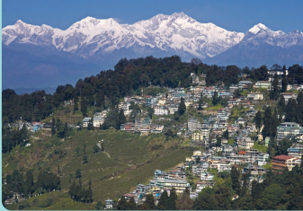
Define the concept of tourism
Appreciate the basic and geographical components of tourism
Understand the types of tourism
Identify the places of tourist attraction in India
Explain the places of tourist attraction in Tamil Nadu
The word tourist was derived from an old English word “tourian” which refers to a person who travels out of his usual environment for not more than one year and less than 24 hours. The purpose of travel may be religious, recreation, business, historical and cultural.
Tourism has become an important source of income for many regions and even for the entire countries of the world. Tourism is an essential part of the life of the society because of its direct impact on social, cultural, educational and economic sector of the nation and on their international relations too. The three main components of tourism are
Attraction
Accessibility
Amenities.
These three components are together known as A3 concept.
Attractions mainly comprise of two types such as
Natural attraction
Cultural attraction
Natural attraction includes landscape, seascape, beaches, climatic condition and forests. Cultural attraction are historic monuments and other intellectual creations. Apart from this, cultural attractions also includes fairs and festivals.
Accessibility means reachability to a particular place of attraction through various means of transportation such as road, rail, water and air. Transport decides the cost of travel and the time consumed in reaching or accessing a specific attraction.
Amenities are the facilities that cater to the needs of a tourist.
1. Accommodations in terms of hotels, restaurants, cafes and other staying units.
2. Travel organizers, Tour operators and Travel Agents
3. Foreign exchange centres, passport and visa agencies
4. Sectors related to Travel Insurance, Safety and Security
From the ancient times, travel is a fascination for mankind. Tourism can be divided on the basis of nature, utility, time and distance as indicated below.
Religious tourism
Cultural tourism
Historical tourism
Eco-Tourism
Adventure tourism
Recreational tourism
Religious tourism is one of the oldest type of tourism, wherein people travel individually or in groups for pilgrimage to a religious location such as temples, churches, mosques and other religious places. Religious tour to Kasi (Varanasi) by Hindus, to Jerusalem by Christians and to Mecca by Muslims are few of the examples for religious tourism.
It focuses on visiting historically important places like museums, monuments, archaeological areas, forts, temples and so on. Angkorwat of Cambodia, Tajmahal of India and Pyramids of Egypt are some of the examples to quote for Historical Tourism.
Eco tourism typically involves travel to destinations where plants and animals thrive in a naturally preserved environment. Amazon rain forest, African forest safari, trekking in the slopes of Himalayas are the famous incredible Eco friendly attractions.
Gastronomy refers to an aspect of cultural tourism.
Adventure tourism is a type of tourism involving travel to remote or exotic places in order to take part in physically challenging outdoor activities. For example sky dive in Australia, Bungee jumping in New Zealand, mountaineering in the peaks of Himalayas, rafting in the Brahmaputra River at Arunachala Pradesh.
This type of tourism aims at enjoyment, amusement or pleasure are mainly for 'fun activity'. Waterfalls, hill stations, beaches, and amusement parks are the attractive spots for recreational tourism. Apart from this, there are certain modern types of tourism, which got developed in recent years. They are
Annual Holiday tourism
Industrial Tourism
Seasonal Tourism
International Tourism
Group Tourism
Sports Tourism
Health Tourism
Farm and Rural Tourism
Inbound Tourism Touring within the native country.
Outbound Tourism Touring in foreign countries .
International tourism is undertaken to visit the places of international importance and to gather knowledge about international culture and customs. For this, there are certain travel forms and formalities to be fulfilled by the tourists, such as passport, Visa, Foreign Currency, Air ticket, Travel insurance, and other immigration details.
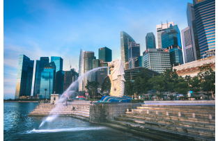
VISA , A document issued to a person (or) a stamp marked on the passport of a person who wants to visit other country.
Tourist VISA , Recreation sight seeing
Student VISA , Higher education
Employment VISA , Work in a country
Medical VISA , Medical treatment in a reputed hospital of a country
Certain elements are fundamental to attract tourists as travel destinations. They are
Pleasant weather
Scenic beauty
Historical and cultural monuments
1 . Landforms , Mountains, Plateaus, Canyons, Valleys, Caves, Cirques, Sand dunes, Coral reefs, Cliffs, etcetra.,
2 . Water , Rivers, Lakes, Waterfalls, Hot springs and Geysers, Snow and Glacier, Water Currents, Tides and Waves.
3 . Vegetation, Forest, Grasslands, Moors, Deserts etc.,
4 . Climate, Sunshine, Clouds, Admirable Temperature, Rain and Snow.
5 . Animal life , (a) Wildlife , Birds, Game Reserves, Zoos.
(b) Hunting and Fishing
6 . Settlement features , (a) Towns, Cities, Villages
(b) Historical remains and Monuments
7 . Culture Ways of life, traditions, folklore, arts and crafts.
BOX ITEM BEGINs
DO YOU KNOW
Game Reserves , An area of land set aside for the protection of wild animals.
BOX ITEM ENDS
India is a country known for its gentle hospitality with spicy food and culture. Visitor friendly traditions with varied life style, culture, heritage, colourful fairs and festivals are abiding attractions for the tourists. All types of land form, varied climate, rich resources for eco and adventure tourism are the versatile speciality of India. Technological parks and science museums, pilgrimage centers with wonderful art and architecture are an added advantage for tourists. Yoga, Ayurveda and Natural remedial Health resorts attract tourists from all over the world.
India being a multi-religious country, religious tourism is the most popular type of tourism. Various package tours are organized for the people to attend the religious rituals and to visit places of religious importance. Most famous religious spots of India are as follows
Rameswaram , Tamil Nadu
Kaanchi puram , Tamil Nadu
Varanasi(Kasi) , Uttarpradesh
Saranath , Uttarpradesh
Vaishnavadevi temple , Jammu and Kashmir
St. Francis Xavier Cathedral , Goa
Amritsar , Punjab
Monasteries of Ladakh , Jammu and Kashmir
Scenic attraction is a very important factor in tourism. Scenery consisting of Mountains, Lakes, Waterfall, Glacier, Forests, and Deserts are the major features attracting people to visit them. India is blessed with nature and gifted with immense beauty from rolling hills to deep valley and snow covered mountains to lush green carpet.
The Indian sub continent has seven principal mountains ranges and the largest of all is the Himalayas that lie in the northern part of India. Most of the Himalayan hill stations in India are located in states of Jammu and Kashmir, Himachal Pradesh, Uttarakhand, Sikkim, West Bengal, Arunachal Pradesh, Nagaland and Meghalaya. Maharashtra, Karnataka, Tamil Nadu and Kerala have hill stations in the Western Ghats. Andhra Pradesh, Odisha have hill stations in the Eastern Ghats.
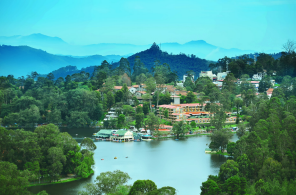
Kodai kaanal, Ooty , Tamil Nadu
Nainital, Mussoorie , Uttarakhand
Darjeeling , West Bengal
Gulmarg , Jammu & Kashmir
Shillong , Meghalaya
Shimla, Manali , Himachal Pradesh
Munnar , Kerala
Gangtok , Sikkim
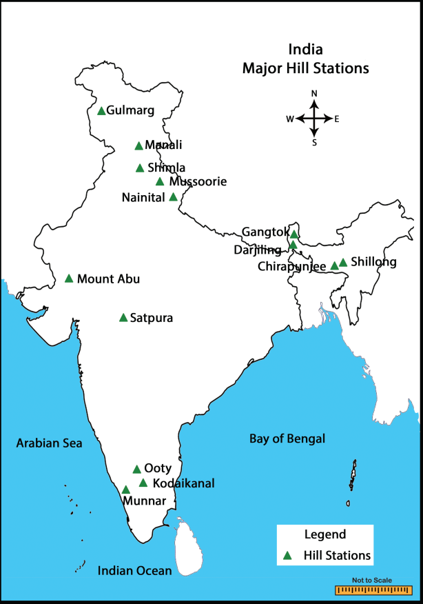
BOX ITEM BEGINS
DO YOU KNOW
I T C , Inclusive Tour Charter
I A T A , International Air Transport Association
I A T O , Indian Association of Tour Operators
T A A I , Travel Agents Association of India
T T T H A , Tamil Nadu Tour Travel and Hospitality Association
T T D C , Tamil Nadu Tourism Development Corporation
BOX ITEM ENDs
In India there are many spectacular and wonderful waterfalls covered by dense forest, huge walls of rock and lush green trees. Among these waterfalls, some are seasonal, while some are perennial. Few of the amazing waterfalls are in swing during the monsoon season. This season brings lot of tourists to these bubbling waterfall sites. Notable waterfalls of India are given below
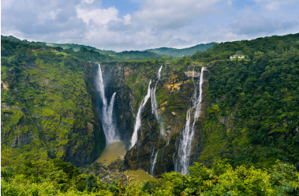
Serial number |
Water falls |
Geographical location |
Serial number 1 |
Thalaiyar waterfalls |
Geographical location, Horse tail type located in Dindugul district of Tamil Nadu |
Serial number 2 |
Jog water falls |
Geographical location, Segmented waterfall (Raja, Rani and thunder) located in Shimogo district of Karnataka |
Serial number 3 |
Nohkalikai waterfalls |
Geographical location, Tallest plunge type of waterfall situated in the East khasi hill district of Meghalaya. |
Serial number 4 |
Talakona waterfalls |
Geographical location, It is the highest waterfall in Andhra Pradesh. A lot of medicinal herbs are seen around the region. |
Serial number 5 |
Aathirappally waterfalls |
Geographical location, The Niagara of India, is located in Thrissur district of Kerala. |
India possesses a wide range of forests and grasslands. Diversity of these lands makes it one of the hotspot for flora and fauna. The dense and dark forest of Indian States provides suitable habitat for a wide and an unique variety of animals and birds. Royal Bengal Tigers, Indian Lions, Elephants, Rhinoceros, Indian leopard and Reptiles are the major tourist attractions. Bird sanctuaries attract attention for their exclusive variety of birds. Diverse range of climate of India invite birds from remote places to feed, breed and to nurture their young ones in the Indian bird sanctuaries .
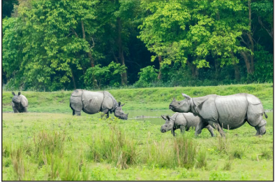
Push factors in Tourism are Prestige Pull factors in Tourism are Amenities.
Serial number |
Wildlife sanctuary |
state |
Animals |
Serial number 1 |
Mudumalai wildlife sanctuary |
state Tamil Nadu |
Animals Tiger, Elephant , Bison, Deer |
Serial number 2 |
Kaziranga National Park |
state Assam |
Animals Tiger, Deer, Buffalo |
Serial number 3 |
Ranthambor National Park |
state Rajasthan |
Animals Tiger |
Serial number 4 |
Kanha National Park |
state Madhya Pradesh |
Animals Swamp Deer |
Serial number 5 |
Sundarbans National Park |
state West Bengal |
Animals Bengal Tiger |
Serial number 6 |
Gir National Park |
state Gujarat |
Animals Lions |
Serial number 7 |
Bhadra Wildlife Sanctuary |
state Karnataka |
Animals Bison, Leopard, Gaur |
Serial number 8 |
Periyar National Park |
state Kerala |
Animals Elephant, Deer |
Serial number 9 |
Corbett National Park |
state Uttarakhand |
Animals Tiger |
Serial number |
Bird Sanctuary |
State |
Serial number 1 |
Koonthan kulam bird sanctuary |
State Tamil Nadu |
Serial number 2 |
Kumarakom bird sanctuary |
State Kerala |
Serial number 3 |
Bharatpur bird sanctuary |
State Rajasthan |
Serial number 4 |
Mayani bird sanctuary |
State Maharashtra |
Serial number 5 |
Uppalapadu bird sanctuary |
State Andhra pradesh |
Serial number 6 |
nal Sarovar bird sanctuary |
State Gujarat |
Serial number 7 |
Nawabganj bird sanctuary |
State Uttar Pradesh |
India is a country with 7517 Kilometer long coastline comprising the most beautiful beaches bounded by Arabian sea and Bay of Bengal. Indian beaches are enriched with diverse coastal land forms filled with aquatic flora and fauna . Lush backwater in the lagoons of Kerala and picturesque beaches of Goa such as calangute, Aguda are the notable tourist destinations for water sports activities. The most charming and enchanting beaches of India are listed below.
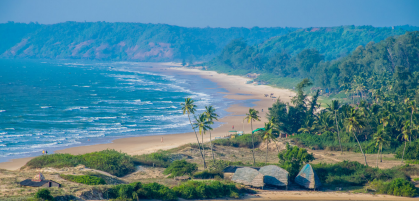
Serial number |
Beaches |
State |
Geographical features |
Serial number 1 |
Dhanushkodi beach |
State Tamil Nadu |
Geographical features , Turquoise blue sea water |
Serial number 2 |
Varkala Beach |
State Kerala |
Geographical features, Sea Cliffs for wonderful sunset views |
Serial number 3 |
Tarkarli Beach |
State Maharashtra |
Geographical features, Coral reefs and marine adventure |
Serial number 4 |
OM Beach |
State Karnataka |
Geographical features, Two semi circular caves that join together forming the inverted symbol of OM |
Serial number 5 |
Aguda Beach |
State Goa |
Geographical features, A huge hill dominates the southern side of the beach. |
Serial number 6 |
Marari Beach |
State Kerala |
Geographical features, Saddle like rock (Hammock) Beach |
Tamil Nadu has various tourist attractions like religious centres, spiritual retreat centres, beaches, hill stations, waterfalls, wildlife, art, culture, architecture, crafts, heritage monuments etcetera. The Government of Tamil Nadu has recognized the importance of tourism long ago and facilitated its development in desired directions. Exploring new avenues like medical tourism and adventure tourism in the past decades have helped Tamil Nadu tourism to achieve more than twenty percent annual growth. Tamil Nadu earns the largest share of income from tourism in India.
Tamil Nadu is a state popularly known as land of Temples and has been the greatest source for spiritual rejunuvation for travellers all over the world. The state is home to around 33 thousand ancient temples that mainly belongs to Dravidian style of architecture. Some of the world renowned religious destinations are as follows
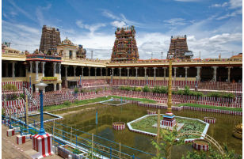
Thanjavur Big temple
Madurai Meenakshi temple
Rameswaram Ramanathaswami temple
Temples of Kancheepuram
Velankanni Madha church
Nagoor Dargah
Tamil Nadu being situated in the Southern end of the Western and Eastern Ghats, is the home for several hill stations. Popular among them are Udagamandalam (Ooty), Kodaikanal, Yercaud, Coonoor, Valparai, Yelagiri, Sirumalai, Kalrayan Hills and Palani Hills, Shevroy hills and Cardamom Hills. They are also abodes of thick forest and wild life.
Ooty , Queen of Hills
Yercaud , Lake forest (Poor Man's Ooty)
Yelagiri , 14 hairpin bends
Kodaikanal , Princess of Hill Stations
Kotagiri , Green Hills
Velliangiri Hills , Kailash of the South
Kolli Hills , motor able terrain with 70 hairpin bends
Anaimalai Hills , Top slip
Meghamalai , High wavy mountains
Javadi , Nature’s Heaven
Mountains and rivers of Tamil Nadu combined together created many endearing waterfalls. Waterfalls in Tamil Nadu with its inspiring natural wonders attracts many tourists. A trek amidst thick green trees, steep hills and a bath in the gushing water is most rejuvenating. Here is the list of famous water falls of Tamil Nadu.
Serial number |
Waterfalls |
Geographical location |
Serial number 1 |
Hogenakal falls |
Geographical location, It is a beautiful waterfall located in Dharmapuri district. |
Serial number 2 |
Kumbakkarai falls |
Geographical location, River Pambar cascades to form this fall at the foot hills of Kodaikanal in Theni district. |
Serial number 3 |
Monkey falls |
Geographical location, This waterfall lies on Anaimalai hills range in Coimbatore surrounded by Evergreen forests. |
Serial number 4 |
Killiyur falls |
Geographical location, Situated in the shervarayon hill ranges of the Eastern Ghats. |
Serial number 5 |
Kutraallam |
Geographical location, kutraallam is located in Tenkasi district. It is known for medical spa. |
Serial number 6 |
Aagaaya Gangai |
Geographical location, It is a waterfall in Puliacholai on Kolli Hills in Eatern Ghats of Namakkal district. |
Serial number 7 |
Suruli Falls |
Geographical location, This falls is also called as Cloud Land falls (or) Meghamalai falls. It is located in Theni district. |
Wildlife sanctuary in Tamil Nadu includes Bird sanctuaries and National Parks. Tamil Nadu is also well known for the diverse natural heritage that it possesses. Hence tourists are highly excited about the wildlife tour across the state. The total area of Tamil Nadu is approximately 130,058 SQUARE KILOMETER . 17 POINT 6 PERCENTAGE of the land area comprises of thick forests. Visitors will get to watch a smooth blend of wet evergreen forest, dry and wet deciduous forests, grasslands, sholas, mangroves and thorny scrubs. Besides varied natural vegetation, another prized possession of Tamil Nadu is wildlife Sanctuaries including Tiger, Elephant, Deer, Monkey, Bison etcetera for protecting the entire flora and fauna. Wildlife Sanctuaries of the state are enlisted below,
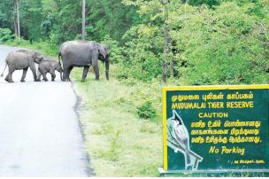
Serial number |
Name of Wildlife Sanctuary |
District |
Serial number 1 |
Mudumalai Wildlife Sanctuary |
Nilgiris District |
Serial number 2 |
Mundanthurai Wildlife Sanctuary |
Tirunelveli District |
Serial number 3 |
Point Calimere Wildlife Sanctuary |
Nagapattinam District |
Serial number 4 |
Indira Gandhi Wildlife Sanctuary |
Coimbatore District |
Serial number 5 |
Kalakaadu Wildlife Sanctuary |
Tirunelveli District |
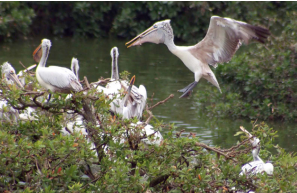
Serial number |
Name of Birds Sanctuary |
District |
Serial number 1 |
Vettangudi birds Sanctuary |
Sivagangai District |
Serial number 2 |
Karaivetti birds Sanctuary |
Ariyalur District |
Serial number 3 |
Vellode birds Sanctuary |
Erode District |
Serial number 4 |
Vedanthangal birds Sanctuary |
Kancheepuram District |
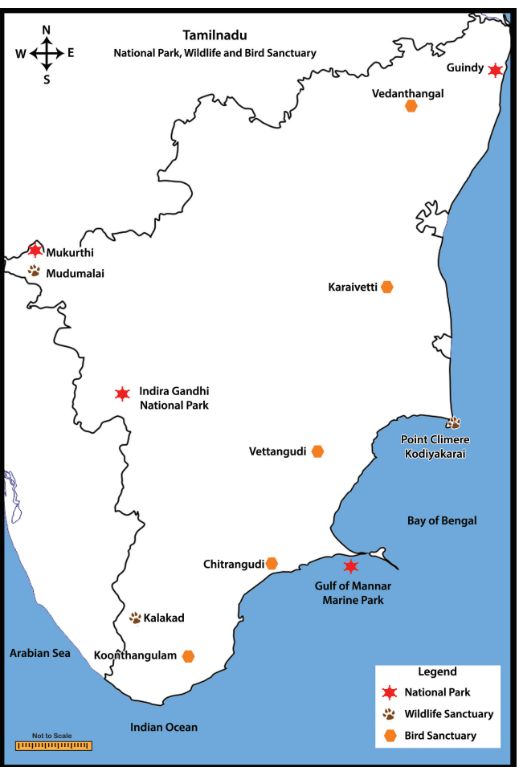
Serial number |
Name of National Parks |
District |
Serial number 1 |
Gindy National Park |
Chennai District |
Serial number 2 |
Gulf of Mannar Marine Park |
Ramanatha puram District |
Serial number 3 |
Indira Gandhi National Park |
Coimbatore District |
Serial number 4 |
Mukurthi National Park |
Nilgiris District |
Serial number 5 |
Mudumalai National Park |
Nilgiris District |
Tamil Nadu being a Coastal state in India which consists of several beaches. Some of them are world famous tourist spots. Beach is a lovely place to hang around with friends, families and kids. All these are ideal destinations for sun bath relaxation and water sports activities.
Serial number |
Beaches |
Geographical features |
Serial number 1 |
Kovalam Beach, Kanchipuram |
Geographical features, Small fishing village |
Serial number 2 |
Marina Beach, Chennai |
Geographical features, Second longest urban beach |
Serial number 3 |
Kanyakumari Beach |
Geographical features, Multicoloured sand |
Serial number 4 |
Rameshwaram Beach |
Geographical features, Waveless beach |
Serial number 5 |
Elliot Beach, Chennai |
Geographical features, Beautiful beach active in day and night |
Serial number 6 |
Mahabalipuram Beach, Kanchipuram |
Geographical features, Architectural and Archeological beach |
Serial number 7 |
Silver Beach Cuddalore |
Geographical features, Water sports is the entertainment |
Serial number 8 |
Muttukadu Beach, Kanchipuram |
Geographical features, Calm and Shallow |
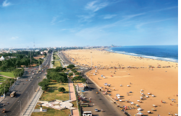
The quality of the environment is essential for tourism. The tourism industry created several positive and negative impacts on the environment.
Direct financial Contributions
Contributions to government revenues
Improved environmental management and planning
Increasing environmental awareness
Protection and reservation of environment
1. Depletion of Natural Resources
Water resources
Local resources
Land degradation
2. Pollution
Air and Noise Pollution
Solid Waste and Litering
Sewage
3. Destruction and Alteration of Eco system
Air
Water
Soil
Wrap up
The word tourist was derived from an old English word “tourian.”
The basic components of tourism are Attraction, Accessibility and Ameneities.
Tourism can be divided on the basis of nature, utility, time and distance.
Geographical component of Tourism are location, climate, settlement and culture.
Industrialization and urbanization had created great pressure on modern living.
India is a country known for its gentle (or) hospitality to all visitors.
The Indian sub-continent has seven principal mountains ranges.
Scenery consisting of Mountains, Lakes, Waterfalls, Glaciers, Forests, and Deserts.
The dense and dark forest of Indian states provide home to wild life.
Tamil Nadu is also well known for the diverse natural heritage that it possesses
Glossary
1 |
Geyser |
a natural hot spring |
வெந்நீர் ஊற்று |
2 |
Accessibility |
the quality of being easily to obtain or use |
அணுகுமுறை |
3 |
Amenities |
attractiveness of a place |
வசதிகள் |
4 |
Recreation |
the feeling of being relaxed |
பொழுதுபோக்கு |
5 |
Amusement park |
a large outdoor area with fairground rides, shows and other entertainments |
பொழுதுபோக்கு பூங்கா |
6 |
Bird sanctuary |
an area of land in which birds are protected and encouraged to breed |
பறவைகள் சரணாலயம் |
7 |
Wildlife sanctuary |
an area which provides protection and favourable living conditions to the wildlife |
விலங்குகள் சரணாலயம் |
8 |
Land degradation |
Loss of natural fertility of soil because of loss of nutrients |
நில வளம் குறைதல் |
1. The oldest type of tourism is DASH
a ) Religious
b ) Historical
c ) Adventure
d) Recreational
2. In which state is the Kaziranga national park located.
a ) Rajasthan
b ) West Bengal
c ) Assam
d ) Gujarat
3. Which one of the following is not a beach of India ?
a ) Goa
b ) cochin
c ) Kovalam
d ) Miami
4. Which of the following is not a bird sanctuary in India ?
a ) nal sarovor in Gujarat
b ) Koonthakulam in Tamil Nadu
c ) Bharatpur in Rajasthan
d ) Kanha in Madhya pradesh
5. In which district kutrallam waterfalls is located ?
a ) Dharmapuri
b ) Tirunelveli
c ) Namakkal
d ) Theni
1 . The three main components of tourism together known as DASH
2 . Gastronomy refers to an aspect of DASH tourism.
3 . Suruli falls is also called as DASH
4 . The second largest urban beach is DASH
5. Expansion of TAAI DASH
1 . Transport, Attraction, Accommodation, Amenities
2 . Nainital, Shillong, Munnar, Digha
3 . Corbett, Sundarbans, periyar, Mayani
4 . Hogenakal, Kumbakkari, Suruli, Kalakaadu
5 . Rishikesh, ladakh, Gulmarg, Kotagiri
1 |
Aana malai hills |
West Bengal |
2 |
Monkey falls |
Goa |
3 |
Darjeeling |
Coimbatore |
4 |
Nature’s Haven |
Top slip |
5 |
Aguda Beach |
Javadi |
1 . Assertion (A) Tourism is an essential activity for the life of the society.
Reason (R) Its direct impact on social cultural, education and economic sector of the nation.
a. Assertion and Reason are correct and Assertion explains Reason
b. Assertion and Reason are correct but Assertion does not explain Reason
c. Assertion is in correct but Reason is correct
d. Both Assertion and Reason are in Correct
2. Assertion (A) One of the most popular beaches in Goa Calangute is a treat for the adventure sports activities.
Reason (R) Foreigners throng the beaches
a Assertion and Reason are correct and Assertion explain Reason
b. Assertion and Reason are correct but Assertion does not explain Reason
c. Assertion is incorrect but Reason is correct
d) Both Assertion and Reason are incorrect
1 . Define Tourism ?
2 . Write short note on ECO Tourism ?
3 . What are the basic elements of Tourism ?
4 . Name any five hill stations in India ?
5 . Name any five beaches in Tamil Nadu ?
1. International Tourism and Historical Tourism
2. Religious Tourism and Adventure Tourism
3. Attraction and Accessibility
1 . Explain the Geographical components of Tourism ?
2 . Write briefly about the waterfalls in Tamil Nadu ?
3 . Describe the Environment Impact of Tourism ?
1 . Why do we like sightseeing so much ?
2 . What are the ways to protect the sanctuaries ?
3 . List any five reasons for travelling ?
This activity should be done by students under the supervision of the subject teacher.
The students are grouped with six members in a group.
Each student will discuss in the group about their last tour.
Each group will collect photographs and information.
The information will be shared in the class as well as displayed on the notice board of the class room.
1 . A .K .Bhatia (2009) Tourism development principles and practices, Sterling Publishers Private Limited, New Delhi.
2 . Shakunthala Jagannathan (1994) India plan your own Holiday, Published by Jean Trindade for Vakils, Feffer and Simons Limited , Mumbai .
3. Madura Welcome (2015) Tourist Guide book of Tamil Nadu, Madura Travel Service Private Limited, Chennai.
4. C . R . Vilasini (2003) Tourism Geography (Tamil version) S. Karthik, Coimbatore.
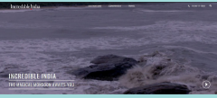
Let’s go for a tour
Step 1
Type the following URL https://www.incredibleindia.org/content/incredibleindia/ en.html in the address bar or scan the QR code given in the right side.
Step 2
In this site you can experience the Heritage ,spiritual , Adventure, Yoga and wellness, Art and culture, Food and cuisine, Nature and wildlife and Luxury
Step 3
You can get the list of Popular destinations, Spiritual destinations, Heritage destinations, World Heritage , Buddhism in India and Museums here.
Scan the QR code Given below to download the mobile app of this site
Tourism Attraction URL
URL https://www.incredibleindia.org/content/incredibleindia/en.
Pictures are indicative only
If browser requires, allow Flash Player or Java Script to load the page